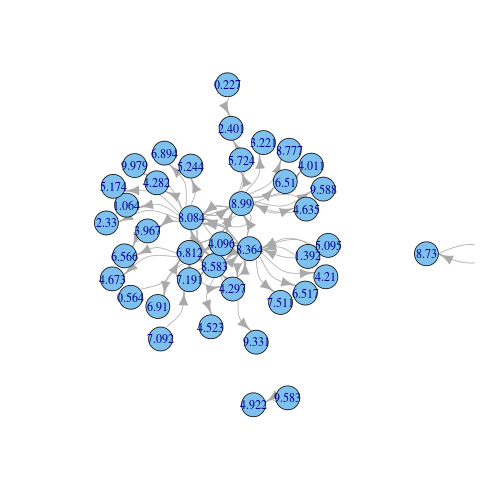

Motivation
- Recent work: priors on sparse / scale-free graphs
- Can this be extended to modeling communities?
Kris Sankaran
\[ W \sim CRM \left(\rho, \lambda\right) \\ D = \text{PoissonProcess}\left(W \times W \right) = \sum_{i, j} n_{ij} \delta_{\theta_{i}, \theta_{j}}\\ Z = \text{Capped}\left(\text{Symmetrized}\left(D\right) \right) = \sum_{i, j} \left[\left(n_{ij} + n_{ji}\right) \wedge 1 \right] \delta_{\theta_{i}, \theta_{j}} \] where \(\rho\) is a Levy intensity and \(\lambda\) is the Lebesgue measure on \(\mathbb{R}_{+}\). In practice, we have to restrict to \(\lambda_{\alpha}\).

Figure from Favaro and Teh "MCMC for Normalized Random Measure Mixture Models".
a <- 1; tau <- 1; sigma <- 0.4
alpha <- 20
D <- NGGPGraph(a, tau, sigma, alpha); colnames(D) <- c("theta1", "theta2")
D.counts <- ddply(data.frame(D), .(theta1, theta2), summarise, counts = nrow(piece))
plot3d(D.counts, type = "h")
You must enable Javascript to view this page properly.
library("igraph")
D.graph <- graph.edgelist(as.matrix(colwise(as.character)(round(data.frame(D), 3))))
plot.igraph(D.graph, edge.curved = TRUE, edge.arrow.mode = 1)

Z <- UndirectedGraph(D) # symmetrizes and caps graph
colnames(Z) <- c("theta1", "theta2")
Z.counts <- ddply(data.frame(Z), .(theta1, theta2), summarise, counts = nrow(piece))
plot3d(Z.counts, type = "h")
You must enable Javascript to view this page properly.
Z.graph <- graph.edgelist(as.matrix(colwise(as.character)(round(data.frame(Z), 3))))
plot.igraph(Z.graph, edge.curved = TRUE, edge.arrow.mode = 1)
g.alpha <- read.csv("g_across_alpha.csv")
ggplot(g.alpha,
aes(x = log(n.node, 10), y = log(n.edge, 10), group = sigma)) +
geom_point(aes(shape = as.factor(sigma), col = alpha)) +
geom_abline(aes(slope = 2 - sigma), alpha = 0.5) +
geom_abline(aes(slope = 2), col = "red") +
ggtitle("Subquadratic growth in number of edges")
Draw \(W = \sum_{i} w_{i} \delta_{\theta_{i}} \sim \text{CRM} \left(\rho, \lambda\right)\). For every \(\theta_{i} \in \text{supp}\left(W\right)\), draw
\[ p_{\theta_{i}} \overset{iid}{\sim} GEM \left(\beta\right), \]
a stick-breaking process with parameter \(\beta\).
p <- SampleSB(4, 5, 15)
ggplot(melt(p), aes(x = Var2, y = value, color = as.factor(Var1))) + geom_line()
Draw \((a_{ij})_{(i,j) \in \mathbb{N}^{2}} \overset{iid}{\sim}\) Beta\((\gamma, \delta)\), representing associations between communities. For example, an interesting case would be if \(A\) is block diagonal. Define a "node affinity function,"
\[ H_{A}\left(p_{\theta_{i}}, p_{\theta_{j}}\right) = p_{\theta_{i}}^{T} A p_{\theta_{j}}. \]
Define networks by \[ \newcommand{\W}{\tilde{W}} \newcommand{\D}{\tilde{D}} \newcommand{\Z}{\tilde{Z}} \W = \sum_{i, j} H_{A}\left(p_{\theta_{i}}, p_{\theta_{j}}\right) w_{i}w_{j} \delta_{\theta_{i}, \theta_{j}} \\ \D \sim \text{PoissonProcess}\left(\W\right) \\ \Z = \text{Capped}\left(\text{Symmetrized}\left(\D\right)\right). \]
This scheme is implemented in the MMGraph() function.
Alternatively, we could consider a "hard clustering" for each \(\theta_{i}\).
There are a few obvious omissions...